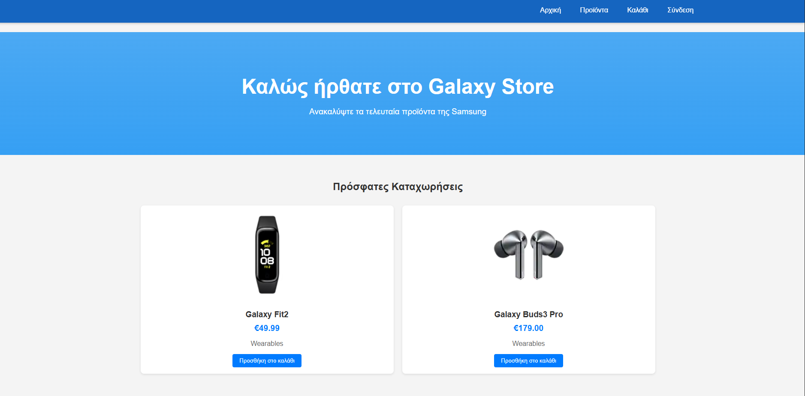
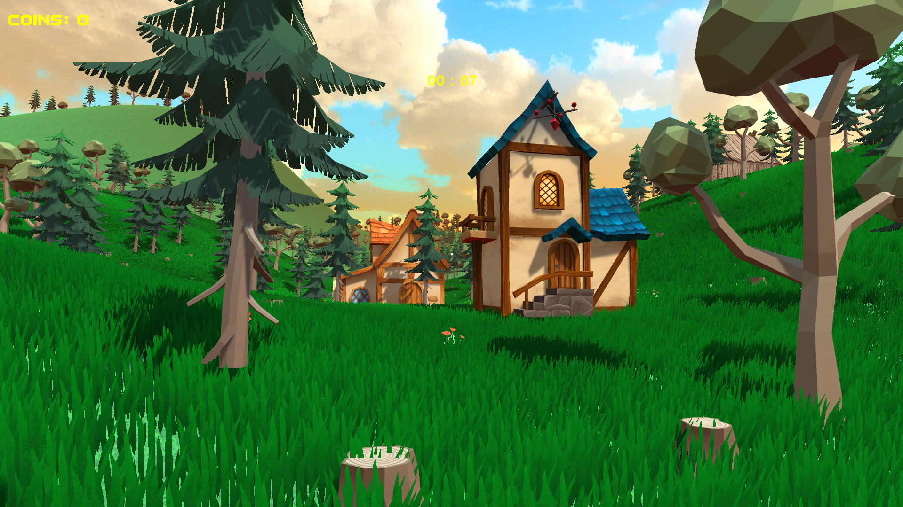
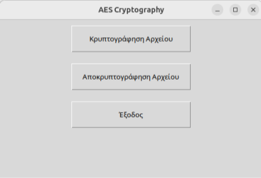
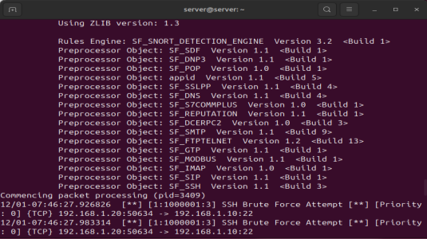
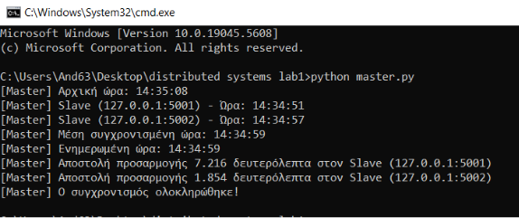
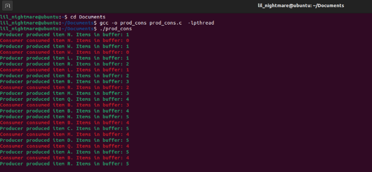
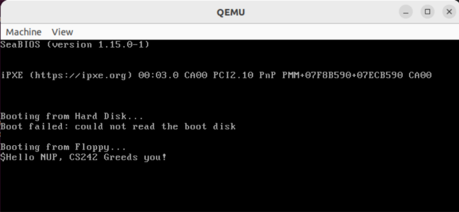

<section id="projects" class="projects">
  <div class="container">
    <h2>My Projects</h2>
    <p class="projects-note">All projects were developed as part of my university coursework, demonstrating practical application of computer science concepts.</p>
    <div class="project-grid">
      <div class="project-card">
        
        <h3>Pharmacy Management System</h3>
        <p>Developed using Python, this system streamlines inventory tracking, customer records, and sales management for pharmacies.</p>
      </div>
      <div class="project-card">
        
        <h3>E-commerce Website for Devices</h3>
        <p>A modern e-commerce website for electronic devices with product listings, shopping cart, and secure checkout.</p>
      </div>
      <div class="project-card">
        
        <h3>Maze Solving Game</h3>
        <p>An interactive maze game that demonstrates various pathfinding algorithms (A*, Dijkstra's, DFS) with visual representation of the solving process.</p>
      </div>
      <div class="project-card">
        
        <h3>Until the End Game</h3>
        <p>A 3D survival game developed in Unity, featuring immersive storytelling and interactive gameplay.</p>
      </div>
      <div class="project-card">
        
        <h3>Telecommunications Platform</h3>
        <p>A comprehensive platform for telecom companies featuring customer management, service provisioning, billing systems, and real-time network monitoring capabilities.</p>
      </div>
      <div class="project-card">
        
        <h3>AES Encryption Program</h3>
        <p>Implemented a secure encryption and decryption program using the AES algorithm in Python. It ensures confidentiality of data through symmetric encryption techniques.</p>
      </div>
      <div class="project-card">
        
        <h3>Snort IDS & Brute Force Detection</h3>
        <p>Configured Snort on a Linux server to detect suspicious activities. Demonstrated detection of brute-force SSH attacks initiated from a Kali Linux machine targeting a Windows server.</p>
      </div>
      <div class="project-card">
        
        <h3>Berkeley Algorithm in Distributed Systems</h3>
        <p>Implemented the Berkeley algorithm in Python to synchronize clocks across multiple distributed nodes, ensuring consistency in a networked environment.</p>
      </div>
       </div>
        <div class="project-card">
        
        <h3>Synchronization Using Semaphores – Producer-Consumer Problem</h3>
        <p>Implemented the classic Producer-Consumer problem using semaphores to manage synchronization between threads. Ensured safe access to a shared buffer by handling mutual exclusion and avoiding race conditions in a multithreaded environment.</p>
      </div>
         <div class="project-card">
        
        <h3>Bootloader and kernel in assembly</h3>
        <p>Built a simple bootloader and a basic kernel using x86 Assembly. The bootloader loads the kernel from disk into memory, demonstrating low-level system initialization. This project showcases foundational OS concepts like memory management, hardware interfacing, and direct CPU control.</p>
      </div>
    </div>
  </div>
</section>
